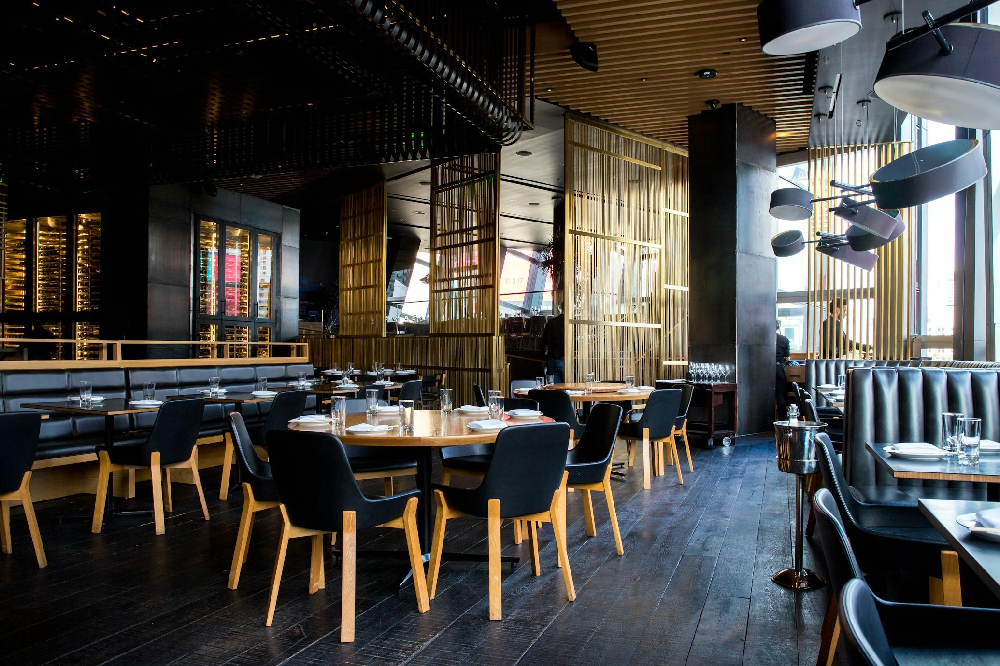

Khám phá cách các đầu bếp hàng đầu biến mỗi món ăn thành một tác phẩm nghệ thuật. Từ việc lựa chọn màu sắc, bố cục đến việc kết hợp các yếu tố trang trí tinh tế.
Đọc tiếp →Tìm hiểu cách nhận biết và lựa chọn các nguyên liệu tươi ngon, chất lượng cao cho các món ăn fine dining của bạn.
Khám phá những xu hướng ẩm thực mới nhất đang làm mưa làm gió trong giới fine dining trên toàn thế giới.
Câu chuyện truyền cảm hứng về con đường sự nghiệp của một đầu bếp đạt sao Michelin, từ những bước đầu tiên đến đỉnh cao vinh quang.